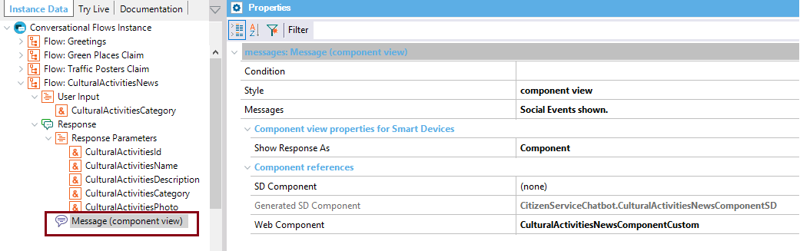

The Message node (child of the Chatbot Response) includes the Condition, and the Style to show the message. You can define as many Messages as necessary (they will be shown depending on the Condition). Depending on the Style selected, you will have additional properties to configure. In particular, when the Style = "Component view", you need to configure the Show Response As property and decide whether you will use an auto-generated component (Generated Component property or Generated Web Component property) or a custom component (SD Component property or Web Component property).  Response Parameters are used to automatically generate the response views when you use auto-generated components. If you remove any of the Response parameters, they won't be included in the auto-generated view. |